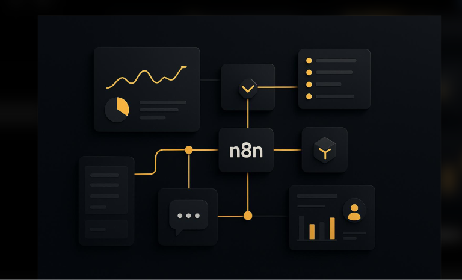
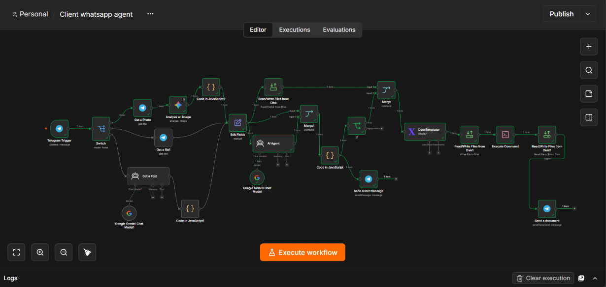
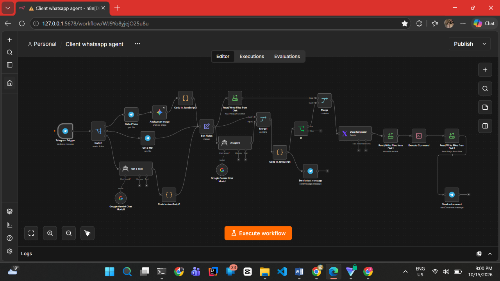
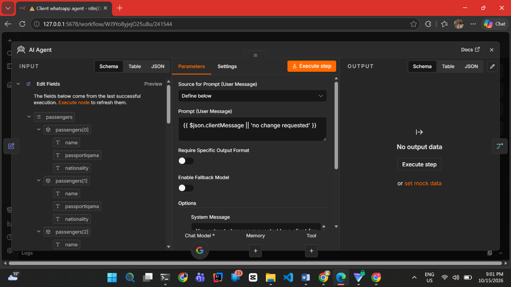
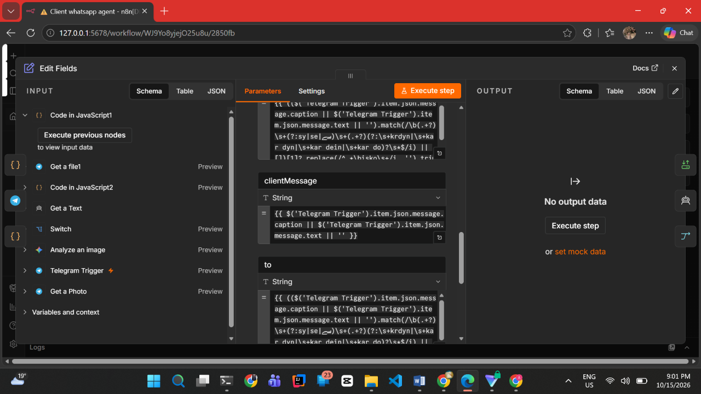
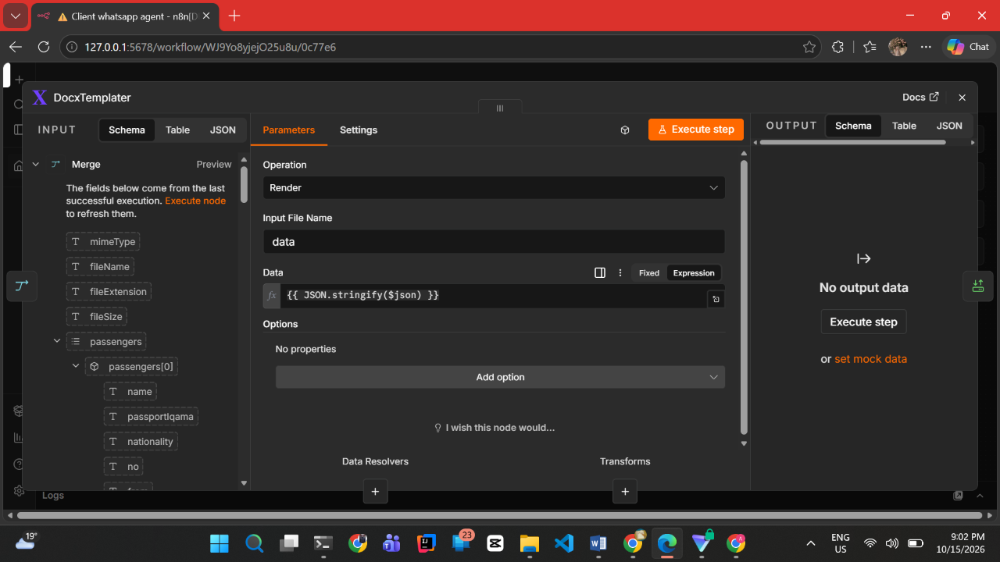
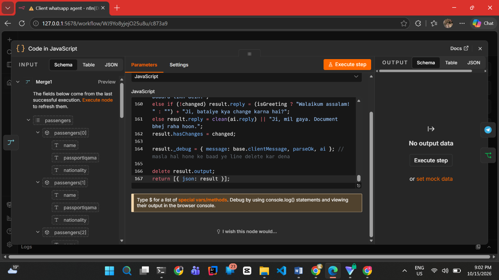
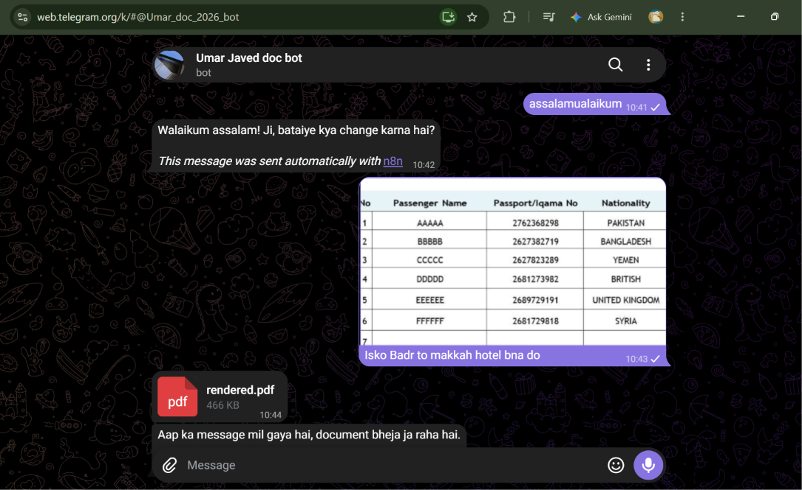
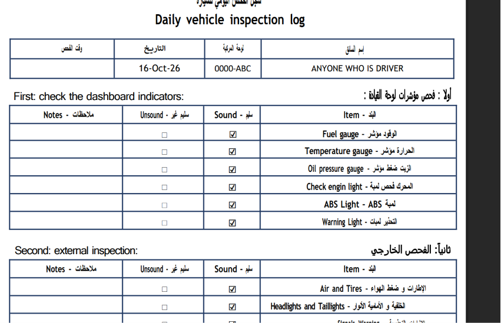
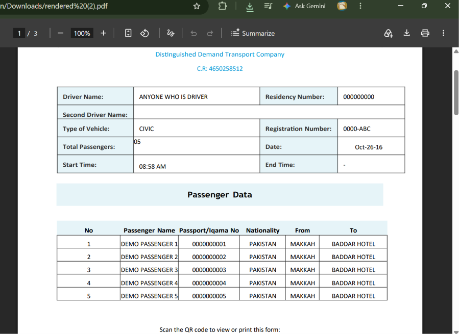

AI Agents
AI-powered systems that analyze information and assist with business tasks.
I build AI-powered workflows that help businesses automate repetitive tasks, connect their tools, and improve everyday operations.
I combine AI, automation platforms, APIs and business tools to create workflows that reduce repetitive work and improve everyday operations.
AI-powered systems that analyze information and assist with business tasks.
Automated workflows that connect tools and reduce repetitive manual processes.
Lead management, data updates and notifications connected to business systems.
Connect compatible business tools and create automated data flows.
Transform repetitive business processes into more consistent workflows.
A structured process focused on understanding the problem, building the right solution and improving it through testing.
Understand the business goals and identify repetitive processes suitable for automation.
Map the workflow and select appropriate tools, integrations and automation logic.
Build and connect workflows using suitable automation tools and services.
Test workflows, resolve issues and improve reliability through testing.
Explore practical automation projects, their workflows, implementation details and demonstrations.
A Telegram-based workflow built with n8n to receive supported passenger information and document inputs, process relevant details, generate a formatted document and deliver a PDF through Telegram.
Preparing passenger documents can require repetitive data handling, information organization and document formatting.
The workflow routes supported inputs through processing steps, prepares the required information and generates a formatted PDF for delivery.
Recorded demonstration of the Telegram-based workflow.










I’m an AI automation and workflow specialist focused on building practical automation systems using n8n, AI tools, integrations and business workflows.
My background in graphic design gives me a creative approach to problem-solving, while my automation work focuses on creating practical systems.
I focus on connecting tools, streamlining repetitive processes and designing workflows that make everyday business operations more efficient.
I work with automation platforms, AI tools and integrations to design connected workflows that reduce repetitive manual work.